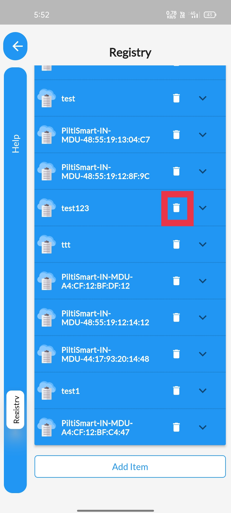

STEP 1To Delete device Registry info, Click on the Dashboard. |
 |
STEP 2Select the Registry option available. |
 |
STEP 3Click on the delete button at the right, & Available in the device registry tab itself. |
 |
STEP 4If you are dispalyed with this warning messages,&The devivces connected to the device registry needs to be removed |
 |
STEP 5After removing the devices related to the registry try clicking the delete button.& you will be displayed with a confirmation pop-up.& Click yes to proceed further. |
 |
STEP 6A device(mobile phone) Authentication tab will appear,& asking either your bio-metric(fingerprint) &or the passcode/pincode/pattern (if there any). |
 |
STEP 7A confirmation message will be displayed. |
 |